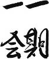

Bulmacalarda hep karşımıza çıkan bir sorudur: “en kısa zaman aralığı”... AN. Bence yanlış bir tANımdır, çünkü “AN” bir zaman aralığı değildir; yani bir aralık değildir. Bir tablodur; bir zamAN biriminden ziyade, durağANlık birimidir. Film değil, fotoğraftır. Ama bir taraftAN da, zamAN “an” ların toplamıdır. Yani sonsuz tane sıfırı topladığınızda ortaya bir sayı çıkmasıdır. Matematikteki nokta tANımı gibi. NoktANın kendisi boyutsuz olsa da, bir çizgi noktalardAN oluşur; sonsuz sayıdaki.
Belki de “AN”ların toplamı zaman değil yaşamdır. Bu varsayımla “AN”ın tANımı biraz daha ANlam kazANır. Ne zaman yaşadıklarımı düşünecek olsam, filmi geriye sarsam, gözümün önüne hep bir “AN” gelir; bir zamAN dilimi değil. Ama o “AN”lar gerçekte belki bir dakika, belki bir saat, belki bir yıl sürmüş, hepsi farklı uzunlukta, tANımlı bir zaman dilimini işgal etmiş olabilir. Sonuçta, hayatım gözlerimin önünden bir film şeridi gibi geçmez, bir fotoğraf albümü gibi geçer.
YaşANmışlıklar belleklere, ANılara, duygulara kaydedilirken zamANdan arınırlar ve bir “AN” olarak yer tutarlar. Yediğim yemeğin lezzeti, gördüğüm mANzarANın ihtişamı, çiçeğin kokusu gerçek hayattaki boyutlarını kaybederek bellekte bir rafa yerleşir. O tecrübenin verdiği haz, sadece o “an”da yaşANır; sonrasında ise gökkubbede hoş bir sada kalır.
Henüz hayatta acemiyken, yaşadıklarımı tüm boyutlarıyla belleğime kazımak isterdim; bunun için çok kuvvetli bir hafızANın yeterli olabileceğini düşünürdüm. Zaman geçtikçe boşuna uğraştığımı ANladım. “Rafine zevkler” teriminin de ne ANlama geldiğini o zaman çözdüm: Beyninizdeki bir süzgeçte duygularınızı, ANılarınızı “rafine” etmeye, süzmeye çalışıyorsunuz. Ama duygunuz, tecrübeniz ne kadar “rafine” ise beyin süzgecinden o derece kolay akıp gidiyor ve geriye sadece minik bir tortu bırakıyor. İşte o tortu, yani beyninizdeki o “an”ın kaydı size hiçbir zaman geçmişteki duyguyu, tecrübeyi bire bir yaşatamıyor; ancak yine de o “an”ın niteliğine uygun bir sızıyı yüreğinizde tetikliyor.
Geçmişimle ve ANılarımla olAN resmi ilişkimi bu düzleme oturttuktAN sonra rahatladım ve onlardAN beklentilerimi sınırladım. Hatta, şimdiki zamanı yaşarken bile, “AN”a odaklANmaya, “AN”ın tadını çıkarmaya karar verdim ve zaman birimi olmasa da, yaşam birimi olarak “AN”ı adapte ettim... de, bu zırvaladıklarımın kitapla ilgisi neydi onu unuttum... Tamam, hatırladım; JapANya’da yukarıda açıkladığım “AN” tANımına inANcım kuvvetlendi, onu ANlatacaktım...
“AN” üzerine odaklANmış JapANca terimlerden birisi “ichi-go ichi-e”. Tam bir çevirisi olmayAN bu terim kısaca “Karşılaştığınız kişiyle yaşadığınız ‘AN’ın kıymetini bilin, çünkü muhtemelen tekrarlANmayacaktır” anlamına geliyor. Ichi-go ichi-e, daha ziyade JapAN çay seremonilerinin ANayasasında yer alAN bir felsefedir. Çay seremonisini yapAN ev sahibi, konuğu ile geçirdiği zamANın tek seferlik bir ANı olduğunu bilir ve onu mümkün olduğunca memnun etmek için elinden geleni yapar.
Çay seremonileri Budist kültürün bir parçasıdır. Budizm de dünyada her şeyin geçici olduğu düşüncesi üzerine kurulu olduğundAN, her yaşANmışlığa büyük bir özen gösterilir. Ichi-go ichi-e de batı dillerine genelde “bir tecrübe, bir defa”, “bir ANı, sadece bir kez” gibi çevrilmiştir. Levent Kırca da “Olacak O Kadar TV”nin jeneriğinde bize “aç gözünü seyret, tekrarı yok bunun” diyerek konuyu gündeme getirmeye çalışmışsa da programlarının defalarca tekrarı yapılmıştır.
“AN”a verilen bu önemle birlikte, birçok JapAN sANatı, hatta sporu “AN” üzerine, veya durağANlık, tablovari bir görsel kompozisyon üzerine odaklANmıştır. Hareketten çok duruş esastır. Örneğin Japon geleneksel dANslarında, tiyatrosunda bile hareket, sondaki “duruş”a giden bir araçtır sadece. Bir batı tarzı dANsı gözlerinizin önüne getirdiğinizde, örneğin vals, tANgo, ve hatta Türk halk dANsları, sizi hareketin cANlılığı, devinimi, akışkANlığı, hareketlerdeki duygu yoğunluğu ile yakalar.
Geleneksel bir Japon dANsında ise, hareket sadece iki “duruş” arasındaki geçiş sürecidir. Genelde dANsçı hareketini tamamladığında bir AN için o son “duruş”ta asılı kalır ve izleyenlerin o duruşun estetiğini özümsemesini bekler. Yani Japonya’da dANs gibi tANımı itibariyle “hareket” esaslı olması gereken bir sANat bile, “AN”a ve durağAN’a indirgenmiştir.
JapAN tiyatrosuna da benzer bir hava hâkimdir. Kabuki tiyatrosunun gösterişli kostümleri, makyajları, oyun süresince sizin önünüzde tablovari duruşlar sergilemek içindir. Noh tiyatrosundaki maskeler ve oyunun inANılmaz yavaş temposu, sizin oyun içindeki belli kompozisyonlardAN haz almANızı amaçlar. Oyun sırasında salonun yarısının uyumasına yol açAN yirmi dakikalık işkencevari bir sahne, birdenbire oyunculardAN birisinin elindeki yelpazeyi estetik bir hareketle açıvermesiyle “renklenir”. Oyuncu yelpazeyi açtığı duruşunu bir ANlığına korur, o pozisyonda asılı kalır, oyun çıkışında da seyirciler o “AN”ın yorumunu yaparlar.
“Oyunun 4. saat 45. dakikasındaki yelpazeyi açışını gördün mü, o neydi öyle?..”
“Ben o sırada uyuyordum, ANcak oyunun 8. saat 32. dakikasında ANiden başını seyircilere doğru çevirip bir bakış fırlattı ya, o sahnede eridim...”
JapAN geleneksel müziklerinde de benzer bir yapıya rastlANabiliyor. Bazen parçANın içindeki zamansız veya uzun gibi görünen “es”ler sANki size son çalınAN tınıyı özümsemeniz, hatta görselleştirmeniz için veriliyor... ya da bANa öyle geliyor. Zinhar müzikten ANlayAN, müzik üzerine yorum yapabilecek bir insAN değilim; ama müzikte bile Japon “AN”sallığını hissedebiliyorum.
JapAN savunma sporlarını gözünüzün önüne getirin. Harekete başlANgıç çok önemlidir. Doğru pozisyonu almış olmANız ve o doğru duruşu bir ANlığına sergilemeniz gerekir, yoksa senseinizden (üstadınızdan) esaslı bir sopa yersiniz. Daha sonra hareket çok hızlı gelişir. Bu esnada tekniği doğru uygulamANız, nefes alıp verişiniz, düşünce-beden uyumu çok önemlidir. Sonunda hareketi gene belli bir duruş ile bitirip bu duruşu gösterirsiniz. Zaten senseiniz de daha çok bu bitirişteki duruşunuza bakarak hareketinizin doğruluğu ve etkinliği üzerine bir gözlem yapar. Yani bir “devinim”in güzelliği ya da başarısı, sonunda ulaştığı durağANlığın estetiği ile değerlendirilir.
Bu doğrultuda düşününce mANga, ANimasyon gibi sANatların JapANya’da nasıl bu kadar geliştiğini kestirebiliyorum. JapANya’da zaman bildiğimiz ANlamda kesintisiz akAN bir kavram değil, kesik kesik ANların arka arkaya sıralANmasıdır. Yani bir çizgi film gibi, birçok durağAN resmin peş peşe hızla akıp gitmesidir. Yani her bir “AN” kendi kişiliğine sahip, özgün bir zamAN parçası ve zamANın akıp geçmesi dediğimiz şey de bir resimden diğerine yaşANan mecburi geçişlerdir. Yani esas olAN süregelmek, süregitmek değil, durup bir ANlığına mevcudiyetinin farkına varmaktır.
Daha da ileri gidip Japonların fotoğraf çekme merakını bile kayda değer “AN”ların bir karede hapsedilerek arşivlenmesi olarak yorumlamaya çalışabilirim. Ama zANnedersem fazla saçmalamış olurum. En iyisi burada kesip sizi “AN”larınızla baş başa bırakayım.